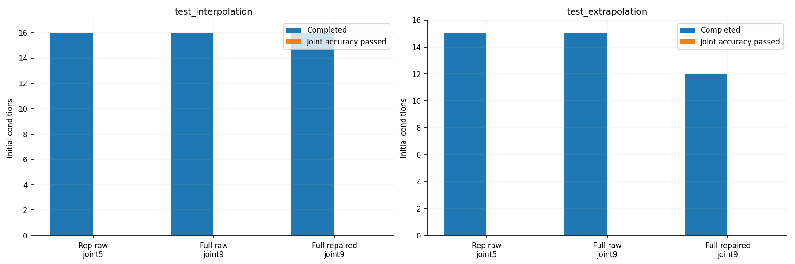
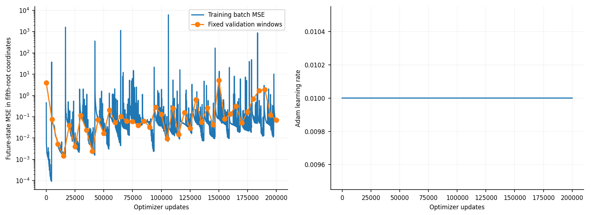

기준: Kumar & Echekki의 2023 공개 원문. 저자의 공개 가중치를 실행한 결과가 아니라 명시된 프로토콜을 새로 구현·학습한 결과다. 2024 저널 최종본 전체와 동일하다고 주장하지 않는다.
branch 5→80→80→200, trunk 1→80→80→200, ShiftNet 5→10→10→1을 사용한다. 다섯 대표 변수는 T/H2/H/O2/H2O다. 미래 시간과 상태에 따른 log-time shift를 trunk에 넣고, 다섯 개의 내적으로 미래 상태를 직접 출력한다. 증분 모델·다중 스텝 loss·soft constraint·학습 중 물리 보정은 없다.
1 atm, h2o2.yaml 10종 기구에서 0.1 μs 간격으로 새 참조를 생성했다. 학습 25개, 검증 12개, 보간 테스트 16개, 외삽 테스트 15개 초기 조건은 서로 겹치지 않는다. 문헌의 정확한 분할·기구 버전·활성함수·출력 분할·복원 ANN 설정은 공개 자료에서 완전히 확정되지 않아 config.json의 가정으로 분리했다. 정규화는 학습 집합에만 맞췄다.
실제 예측은 20 μs씩 25번 자기 예측을 되먹여 0.5 ms까지 진행한다. 각 창의 내부도 0.1 μs 간격으로 질의하지만 그 내부값은 다음 창의 시작값으로 사용하지 않는다. Cantera는 초기 상태와 평가 참조만 제공한다. 대표 변수 raw와 전체 상태 raw를 구분하는 이유는 별도 복원 ANN의 오류를 DeepONet 오류와 분리하기 위해서다.
full repaired는 기존 프로젝트의 농도 clipping·비음수 원소 투영·상압 엔탈피 온도 보정을 포함한 별도 시스템이다. 학습에 제약 loss를 넣는 soft constraint가 아니다.
NRMSE = RMSE(Cantera,NN)/RMS(Cantera), 백분율이 아닌 비율이다. joint5는 대표 5변수 각각 NRMSE≤0.1, joint9는 T+반응종 8개 각각 NRMSE≤0.1이다. N2와 AR은 별도로 기록한다. 불완주에는 전체 0.5 ms 점수를 주지 않는다. 초기 0.1 ms 점수도 CSV에 있다. train 행의 1065 K/φ=1은 원문 그림과 같은 학습 중 본 조건을 보여주는 진단이며 미지 테스트가 아니다.
| 평가 집합 | 방식 | 완주/전체 | 정확도 통과/전체 | 판정 대상 | 완주 조건 중 최대 NRMSE |
|---|---|---|---|---|---|
| test_extrapolation | representative_raw | 15/15 | 0/15 | joint5 | 2.00594 |
| test_extrapolation | raw_full | 15/15 | 0/15 | joint9 | 2.00594 |
| test_extrapolation | repaired_full | 12/15 | 0/15 | joint9 | 4.15488 |
| test_interpolation | representative_raw | 16/16 | 0/16 | joint5 | 7.17433 |
| test_interpolation | raw_full | 16/16 | 0/16 | joint9 | 7.17433 |
| test_interpolation | repaired_full | 16/16 | 0/16 | joint9 | 2.35785 |
| train | representative_raw | 1/1 | 0/1 | joint5 | 0.98489 |
| train | raw_full | 1/1 | 0/1 | joint9 | 1.06647 |
| train | repaired_full | 1/1 | 0/1 | joint9 | 1.12822 |
| val | representative_raw | 12/12 | 0/12 | joint5 | 2.50829 |
| val | raw_full | 12/12 | 0/12 | joint9 | 2.50829 |
| val | repaired_full | 12/12 | 0/12 | joint9 | 1.68934 |
DeepONet은 총 200000 / 200000 update를 실행했다. 검증으로 선택한 것은 105000 update 체크포인트다. 종료 이유: requested_updates_completed. 파라미터 46186개. 시간상한 종료를 평탄 도달로 부르지 않는다. 동일 검증 조건에서 선택하고 그 뒤에 테스트를 평가했다.
모델별 학습시간·update·LR·종료 이유 · 변수별 NRMSE · 조건별 완주·정확도 · 검증 선택 기록 · 참 대표 변수를 입력한 복원 ANN 단독 진단


완주와 정확도 통과는 다르다. 각 방식의 완주 집합이 다르면 중간값만으로 우열을 단정할 수 없다. 이 결과의 범위는 고정 1 atm·0.5 ms이며 기존 1–5 atm·10 ms 실험으로 일반화하지 않는다.
학습 전 게시한 ANN·문헌 조사 커밋: 94a8eff.